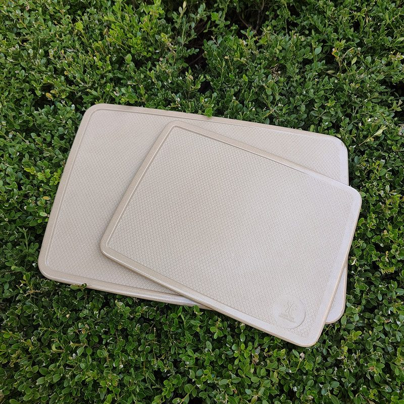
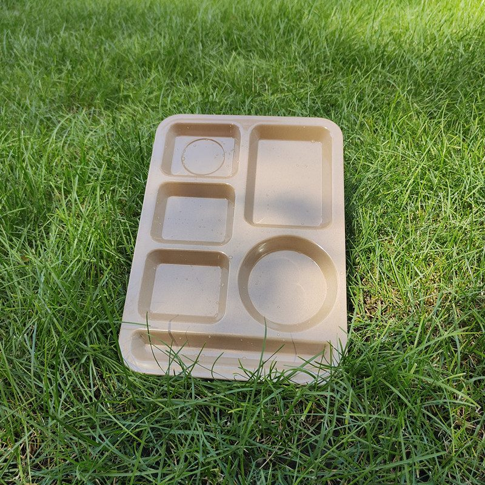

Plastic-Free Catering: Building a Kitchen That Runs From Prep Board to Compartment Tray
Ask a restaurant to cut plastic and you get one workflow to rethink. Ask a catering company and you get dozens: a prep kitchen in the early morning, transport bins at noon, a service line that assembles itself in a hotel ballroom or a school cafeteria by evening. Volume is high, staff turnover is constant, and everything must survive the dish machine. That is exactly why catering is the hardest food business to de-plastic — and the one where reusable plant fiber tableware pays back fastest. This guide walks the flow from prep board to compartment tray, with the cost math and a buying checklist for caterers, school meal programs and corporate cafeteria operators.

Plant fiber chopping boards: light enough for mobile prep teams, tough enough for daily commercial service.
Why Catering Burns Through Disposables Faster Than Restaurants
A la carte restaurant serves plates; a caterer serves events. The difference shows up in the waste bin. A single wedding can push several hundred covers through a temporary kitchen; a corporate lunch contract repeats every working day; a school meal program runs two sittings across an entire academic year. Multiply any of those by a compostable-but-still-single-use plate and the arithmetic gets ugly fast — both in case costs and in the waste stream the client sees at the end of the night.
There is also a branding asymmetry. When a diner sees a disposable plate at a burger counter, it reads as normal. When the same plate appears at a catered conference or a school awards lunch, it reads as cheap — and increasingly, as a values statement the client did not ask for. Event planners have started listing tableware in RFQs alongside linen and florals. Caterers who own an attractive reusable set bid differently from caterers who rent or buy disposables per event.
The Prep Station: Where the Chopping Board Earns Its Keep
Every cover starts at the prep bench, and the prep bench is where plastic quietly hides — in cutting boards that score deeper with every service. Deep knife scars matter in a commercial kitchen for two reasons: they harbor bacteria that survive a casual wash, and they shed micro-fragments into food. Wooden boards avoid the plastic problem but punish neglect; a mobile catering crew washing boards in a borrowed sink will split a wooden board eventually.
Plant fiber boards sit in the practical middle. Dense rice husk composite resists knife scoring, does not absorb odors, goes in the dishwasher, and weighs a fraction of thick wood — which matters more than it sounds when a crew carries prep equipment in and out of vans every day. The two boards in the photo above are the same material in two sizes; a small board for garnish and fruit work, a large one for the main bench. For a closer look at formats and sizes, see our rice husk chopping board range — and if color-coding by food type is part of your HACCP-style routine, ask about custom colors, which we mold into the material itself rather than printing on it.
The Service Line: Compartment Trays Do the Heavy Lifting
If the chopping board is the quiet workhorse of prep, the compartment tray is the signature piece of service. School meal programs, corporate cafeterias, hospitals and event buffets all share the same constraint: one tray must carry a complete meal — main, two sides, salad, dessert, cutlery slot — while looking composed and surviving the dish machine hundreds of times.

A six-compartment plant fiber tray: portion control, menu structure and presentation in one reusable piece.
Molded compartments do three jobs at once. They enforce portion consistency across hundreds of covers served by different hands. They separate wet from dry — gravy stays on the main, yogurt stays on the fruit. And they present the meal the way a food photographer would: structured, colorful, intentional. Disposable compartment trays attempt the same trick and usually fail at the edges — they flex when lifted, leak at the seams, and their look announces "institutional canteen" before the first bite. Our six-compartment plant fiber tray was designed for exactly this service line use case: rigid walls, dishwasher-safe, and a natural beige that photographs like stoneware rather than packaging.
The Cost Math: Reusable vs Disposable Over a Season
The objection every operator raises first is price per unit. A disposable compartment tray costs a fraction of a reusable one at the moment of purchase — and that is the last moment it is cheap. Run the numbers over a single school term:
Disposables: per-unit cost × every cover, every day — plus storage space for incoming cases, plus waste handling fees, plus the labor of constantly restocking
Reusables: higher upfront cost, then a per-use cost that falls every single cycle — a plant fiber tray surviving hundreds of dish machine cycles ends up costing cents per serving
The hidden line items: breakage allowance (plant fiber is far more forgiving than porcelain), replacement pacing, and the client-facing value of serving on tableware that does not read as trash
The crossover point depends on volume, but caterers and cafeteria operators typically find it inside the first quarter of regular service. After that, every cover served widens the gap. If you want the broader argument in one page — including the labor and storage angles — our breakdown of why food businesses are switching to rice husk tableware covers it in detail.
A Buying Checklist for Catering Buyers
Before you commit a season's budget to any reusable line — ours or anyone's — put these questions in the RFQ:
Dishwasher cycles: ask for the tested cycle count, not a vague "dishwasher safe" — commercial machines run hotter than domestic ones
Temperature range: hot-hold windows and chilled display cases both apply; the material should state its limits in writing
Food-contact documentation: request the actual test reports for the specific SKUs (ours are SGS tested and ship with every quotation)
Stackability and weight: transport is a catering cost multiplier — trays and boards should nest tightly and stay light
Breakage and replacement terms: agree a replacement price before you need it, not after
Custom branding: molded logos and custom colors are realistic at production volumes and turn tableware into a brand asset — our guide on choosing a reliable eco tableware manufacturer lists the questions that separate factories from trading companies
Timing: Why This Conversation Happens in Autumn
Catering demand is seasonal in the Northern Hemisphere: the school year has just started, and the corporate event calendar bunches up around late-year holidays. That means the trays and prep equipment a caterer will use in November and December are being specified now. Production slots, custom colors, molded logos and sea freight each add lead time — the same logic we laid out for retailers in the Australian summer stocking guide, just pointed at a different season. Operators who finalize specs in September serve the holiday season on their own branded tableware; operators who decide in November rent disposables for another year.
Frequently Asked Questions
Can plant fiber trays handle commercial dishwashers?
Yes — rice husk composite is molded under heat and pressure into a dense, non-porous material that tolerates repeated commercial dish machine cycles. Ask any supplier for the tested cycle count in writing, and match it to your expected turns per week before ordering.
Are compartment trays suitable for hot food service?
They handle hot-hold and plating temperatures typical of catering service, and are commonly used for soups-adjacent items in the compartment walls. What they are not is a cookware surface — treat them as service tableware, not as a pan. Confirm the stated temperature range with your supplier for your specific service model.
What MOQs apply to custom-branded catering tableware?
Stock (non-custom) items typically start from pilot quantities suitable for a single-venue trial. Fully custom production — molded logo, matched colors, retail packaging — carries stated minimums that vary by SKU. The practical path for a catering group is to trial stock trays at one site, confirm the wash-cycle economics, then roll out a branded range across venues. Send us your venue count and covers per day and we'll quote both routes.
Specifying tableware for a catering operation, school program or cafeteria chain?
Tell us your venues, covers per day and dishwashing setup. We'll reply with a tailored quotation, our SGS food-contact test reports, MOQ options for stock and custom-branded production, and sample arrangements from our 5,000 m² facility.
Send InquiryPublished by Kaixin Eco Team · Shenyang Kaixin Technology Co., Ltd. — eco-friendly rice husk (plant fiber) dinnerware manufacturer since 2016, shipping to 40+ countries with full OEM/ODM support. Going deeper: browse the Kaixin eco tableware homepage for the full reusable range, see why US cafés are ditching plastic tableware, or learn what rice husk tableware actually is.